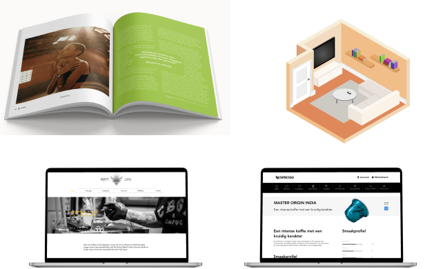
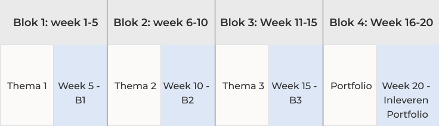

Visual design & frontend development
Wil jij je al een tijdje verdiepen in een nieuwe software/tool of nieuwe skill, maar heb je het door de studie en een bijbaantje daarnaast nog geen tijd voor gehad? Dan is Visual design & frontend development perfect voor jou! De minor wordt gegeven gedurende semester F en bestaat uit drie tijdsblokken, die elk 5 weken duren. In die blokken kun je er voor kiezen om Lottie animaties, InDesign, React etc. te leren. In het laatste blok werk je in een groepje om je projecten van de vorige blokken te presenteren in een portfolio. Je krijgt begeleiding tijdens het proces, maar je vult de minor in zoals jij dat wilt!

Het kan best moeilijk zijn om te bepalen waar jij je in wilt verdiepen, als je hier nog niet veel over na heb gedacht. Daarom hebben de docenten al een lijst met thema’s en je kan een kijkje nemen naar het werk dat wij hebben gemaakt ;) Tijdens de minor staan de docenten, maar ook zeker je medestudenten klaar om je te helpen en feedback te geven. Het is een mooie tijd om van elkaar te leren. Afhankelijk van de gekozen onderwerpen, worden er masterclasses aangeboden, waarbij professionals hun expertise en ervaringen delen.

*Hierboven volgt een overzicht van de tijdsblokken en de losse beoordelingsmomenten (B1, B2, B3). In het grijs staan de deadlines van elk tijdsblok.
Je zorgt en verzameld zelf het studiemateriaal voor je gekozen thema. Dit kunnen LinkedIn Learning cursussen zijn, YouTube tutorials, boeken etc.
Binnen de minor worden de volgende competenties ontwikkeld en getoetst;
- Visualiseren & Prototypen
- Reflecteren